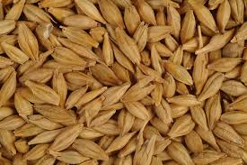
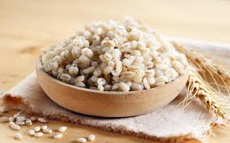
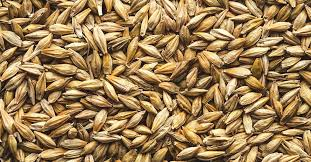

BARLEY
Introduction

Barley, (Hordeum vulgare), cereal plant of the grass family Poaceae and its edible grain. Grown in a variety of environments, barley is the fourth largest grain crop globally, after wheat, rice, and corn. Barley is commonly used in breads, soups, stews, and health products, though it is primarily grown as animal fodder and as a source of malt for alcoholic beverages, especially beer.
Hordeum vulgare is an annual grass featuring erect stems with few, alternate leaves. Barley comes in two varieties, distinguished by the number of rows of flowers on its flower spike. Six-row barley has its spike notched on opposite sides, with three spikelets at each notch, each containing a small individual flower, or floret, that develops a kernel. Two-row barley has central florets that produce kernels and lateral florets that are normally sterile. Whereas six-row barley has a higher protein content and is more suited for animal feed, two-row barley has a higher sugar content and is thus more commonly used for malt production.
Nutrition
Barley is a highly nutritious cereal grain that has been a staple food for centuries. Here are some key points about the nutritional value of barley:
- Macronutrients:
- Carbohydrates: Barley is a rich source of complex carbohydrates, including dietary fiber. One cup (185 grams) of pearled barley contains approximately 41 grams of carbohydrates.
- Protein: Barley is a good source of plant-based protein, with one cup providing around 3.5 grams of protein.Fiber: Barley is particularly high in fiber, both soluble and insoluble. One cup of pearled barley contains about 6 grams of fiber, which is beneficial for digestion and can help regulate blood sugar levels.
- Fiber: Barley is particularly high in fiber, both soluble and insoluble. One cup of pearled barley contains about 6 grams of fiber, which is beneficial for digestion and can help regulate blood sugar levels.
- Vitamins and Minerals:
- Barley is a good source of several essential vitamins and minerals, including thiamine (vitamin B1), niacin (vitamin B3), phosphorus, copper, and manganese.
- It also contains smaller amounts of other nutrients like iron, zinc, folate, and vitamin B6.
- Antioxidants:
- Barley is rich in antioxidants, particularly phenolic compounds and avenanthramides, which have been associated with various health benefits, such as reducing inflammation and lowering the risk of certain chronic diseases.
- Beta-glucan:
- Barley contains a type of soluble fiber called beta-glucan, which has been shown to have several health benefits, including improving cholesterol levels, regulating blood sugar levels, and promoting feelings of fullness.
- Low Glycemic Index:
- Barley has a relatively low glycemic index, meaning it does not cause a rapid spike in blood sugar levels after consumption. This makes it a suitable option for people with diabetes or those looking to manage their blood sugar levels.
Barley can be incorporated into a variety of dishes, such as soups, stews, salads, and even baked goods. It is versatile and can be a nutritious addition to a well-balanced diet, providing a range of essential nutrients, fiber, and potential health benefits.
How to plant Barley

Planting barley is a straightforward process, but it's essential to follow the proper steps to ensure a successful crop. Here's how to plant barley:
- Choose the right variety: Select a barley variety that is suitable for your climate and growing conditions. Spring barley and winter barley are the two main types, and they have different planting times.
- Prepare the soil: Barley grows best in well-drained, fertile soil with a pH range of 6.0 to 7.5. Till the soil to a depth of 6-8 inches, and incorporate any necessary amendments, such as compost or fertilizer, based on a soil test.
-
Determine planting time: Spring barley is typically planted in early spring, as soon as the soil can be worked. Winter barley is planted in the fall, usually in September or October, depending on your location.
-
Seed rate and depth: The recommended seeding rate for barley is around 2-3 bushels (100-150 pounds) per acre for drilled or broadcast seeding. The planting depth should be around 1-2 inches deep.
- Planting method: Barley can be planted using a variety of methods, including broadcasting, drilling, or using a grain drill. Drilling or using a grain drill is generally preferred as it ensures more uniform seed distribution and depth.
-
Fertilization: Barley has moderate fertilizer requirements. A balanced fertilizer containing nitrogen, phosphorus, and potassium can be applied at planting time or as a side-dressing later in the growing season, following soil test recommendations.
-
Weed control: Proper weed control is essential for a successful barley crop. Pre-emergence and post-emergence herbicides may be used, following the manufacturer's instructions and guidelines.
-
Water management: Barley requires consistent moisture during the growing season, especially during the heading and grain-filling stages. Irrigation may be necessary in drier climates or during periods of drought.
-
Harvesting: Spring barley is typically ready for harvest in late summer or early fall, while winter barley is harvested in late spring or early summer. Harvest when the kernels are fully mature and the straw has turned golden-brown.
It's important to follow best practices for your specific region and consult with local agricultural experts or extension services for more detailed advice on planting and growing barley in your area.
Soil and Nutrition
Here are some key points regarding soil and nutrition requirements for growing barley:
Soil Requirements:
- Soil Type: Barley can grow in a wide range of soil types, but it performs best in well-draining, fertile loams or clay loams with good moisture-holding capacity.
- Soil pH: The ideal soil pH range for barley is between 6.0 and 7.5. Acidic soils (pH below 6.0) may require liming to raise the pH for optimal growth.
- Soil Preparation: Proper tillage is essential to prepare a fine, firm seedbed. This helps in good seed-to-soil contact and uniform germination.
Nutrient Requirements:
- Nitrogen (N): Barley has a high nitrogen requirement, especially during the vegetative and reproductive stages. Typical nitrogen application rates range from 60 to 120 pounds per acre, depending on soil fertility and yield potential.
- Phosphorus (P): Phosphorus is crucial for root development, tillering, and grain formation. Recommended rates range from 30 to 60 pounds of P₂O₅ per acre.
- Potassium (K): Potassium plays a role in plant vigor, disease resistance, and grain quality. Typical application rates range from 30 to 60 pounds of K₂O per acre.
- Other Nutrients: Barley also requires adequate levels of sulfur, magnesium, and micronutrients like zinc, iron, and manganese for optimal growth and yield.
Nutrient Management:
- Soil Testing: Conducting soil tests before planting helps determine the existing nutrient levels and guides the appropriate fertilizer application rates.
- Timing of Application: Barley benefits from split applications of nitrogen, with a portion applied at planting or early growth stages and the remaining applied during tillering or stem elongation stages.
- Fertilizer Sources: Organic sources like manure, compost, and green manures can provide nutrients and improve soil health, but inorganic fertilizers are often needed to supplement nutrient requirements.
- Nutrient Deficiency Symptoms: Nitrogen deficiency can lead to stunted growth and pale green leaves, while phosphorus deficiency can result in purple or reddish discoloration of leaves and delayed maturity. Potassium deficiency can cause leaf scorching and reduced yield.
Proper soil management and balanced nutrition are essential for achieving good barley yields and grain quality. Following recommended practices for soil preparation, fertilizer application, and nutrient management can help optimize barley production while promoting sustainable soil health.
Fertilizing

Fertilizing barley is an important step to ensure a healthy and productive crop. Here are some guidelines for fertilizing barley:
- Soil Testing: Before applying fertilizers, it's crucial to conduct a soil test to determine the nutrient levels in your soil. This will help you understand the specific nutrient requirements for your barley crop and apply the appropriate amount of fertilizer.
- Nitrogen (N): Barley has a high demand for nitrogen, which is essential for vegetative growth and grain development. Typically, barley requires between 60-120 pounds of nitrogen per acre, depending on the soil type, yield potential, and previous crop residues.
- Split applications of nitrogen are recommended, with a portion applied at planting and the remaining amount applied as a side-dress or top-dress during the growing season, usually around the tillering or stem elongation stage.
- Phosphorus (P) and Potassium (K): Barley also requires adequate amounts of phosphorus and potassium for optimal growth and yield.
- Phosphorus is important for root development, early growth, and grain formation. Recommended rates range from 20-40 pounds of P₂O₅ per acre.
- Potassium plays a role in water regulation, enzyme activation, and disease resistance. Recommended rates range from 20-60 pounds of K₂O per acre.
- Timing and Method of Application:
- At planting: Apply a portion of the recommended nitrogen, along with phosphorus and potassium, either as a starter fertilizer or incorporated into the soil before planting.
- Side-dressing or Top-dressing: Apply the remaining nitrogen fertilizer when the barley plants are actively growing, typically during the tillering or stem elongation stage.
- Organic Fertilizers: In addition to synthetic fertilizers, organic sources like manure, compost, or green manures can be used to supplement nutrient requirements and improve soil health.
- Balanced Nutrition: A balanced nutrient supply is essential for optimal barley growth and yield. Excessive or deficient levels of certain nutrients can lead to problems such as lodging, disease susceptibility, or reduced grain quality.
It's important to follow local recommendations and guidelines for fertilizer application rates and timing, as these can vary based on your specific soil conditions, climate, and crop management practices.